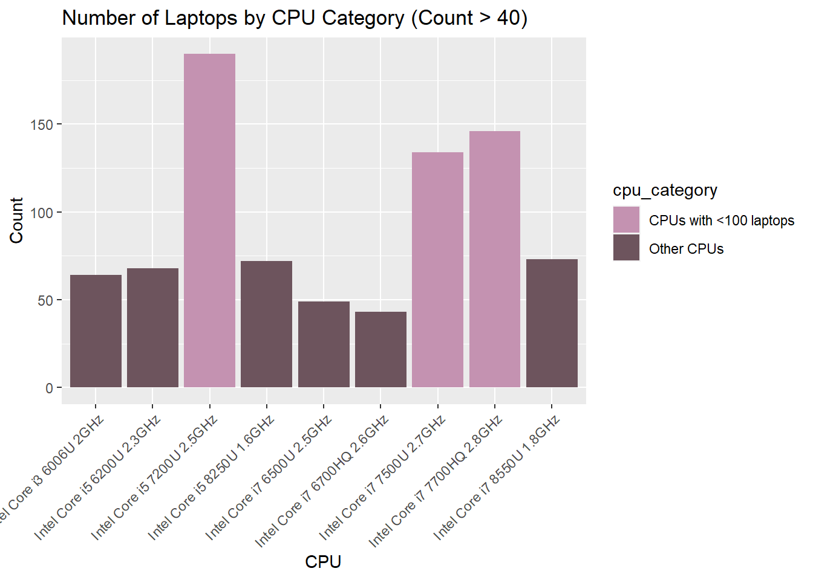

| X | Company | TypeName | Inches | ScreenResolution | Cpu | Ram | Memory | Gpu | OpSys | Weight | Price |
|---|---|---|---|---|---|---|---|---|---|---|---|
| 0 | Apple | Ultrabook | 13.3 | IPS Panel Retina Display 2560x1600 | Intel Core i5 2.3GHz | 8GB | 128GB SSD | Intel Iris Plus Graphics 640 | macOS | 1.37kg | 71378.68 |
| 1 | Apple | Ultrabook | 13.3 | 1440x900 | Intel Core i5 1.8GHz | 8GB | 128GB Flash Storage | Intel HD Graphics 6000 | macOS | 1.34kg | 47895.52 |
| 2 | HP | Notebook | 15.6 | Full HD 1920x1080 | Intel Core i5 7200U 2.5GHz | 8GB | 256GB SSD | Intel HD Graphics 620 | No OS | 1.86kg | 30636.00 |
| 3 | Apple | Ultrabook | 15.4 | IPS Panel Retina Display 2880x1800 | Intel Core i7 2.7GHz | 16GB | 512GB SSD | AMD Radeon Pro 455 | macOS | 1.83kg | 135195.34 |
| 4 | Apple | Ultrabook | 13.3 | IPS Panel Retina Display 2560x1600 | Intel Core i5 3.1GHz | 8GB | 256GB SSD | Intel Iris Plus Graphics 650 | macOS | 1.37kg | 96095.81 |
| 5 | Acer | Notebook | 15.6 | 1366x768 | AMD A9-Series 9420 3GHz | 4GB | 500GB HDD | AMD Radeon R5 | Windows 10 | 2.1kg | 21312.00 |
NM2207 Final Data Story
#Laptops…
Ever got tired of your basic ASUS or HP laptop? Want to look into other options aside from Apple? Or are you simply curious about how many laptops can a company possibly produce?
As budget-strapped students, buying our next laptop is a costly investment we should consider wisely. However, as someone who is not a tech expert and struggled in researching for a new laptop, I found it difficult to start my search because I was not well-versed with what laptops there were. I relied hugely on word of mouth and salesman recommendation to decide on my current laptop, but there may have been better options out there I was simply unaware of!
Thus, welcome to my data story, where I take you through the analysis of a csv file, where we can both gain some insights about laptop brands, specifications, prices, and even its weight! Through this journey, I hope we both gain an awareness of what types of laptops there are, and what categories to begin our search in the next time we find ourselves in need of a laptop.

Introducing: Our data
With the data set named “Laptop Prices Based on its specifications “ by user Abdul Rehman Amer from the website Kaggle, we can look at every computer that is manufactured this year.
Below is the summary of the data set at hand. There are a total of 12 columns, and we can look each laptop’s Company (or brand name), TypeName (Category of laptop), Inches (size of laptop), ScreenResolution (Screen Size), CPU, RAM, Memory, GPU, OpSys, Weight, and Price!
This is just a snippet of the entire data set. Let’s break it down into simpler visualisations so we understand what it is talking about!
Number of Laptop Types by Company
Here are the total number of laptops in the dataset, arranged by the brands that produce them!
Personally, I have never heard of brands such as Chuwi, Mediacom or Vero. Have you seen these laptops before?

It looks like Vero is an environmentally friendly laptop line from Acer! Let’s merge the companies into one for clarity’s sake, into a category called Acer&V.

###Number of Laptop Types by Category of Laptops While we can look at the data through the lens of the company that produces them, we can also investigate the data through the Category of Laptops.
Unsurprisingly, the Notebook category wins by a landslide in terms of quantity produced, with more than 650 types produced. On the other hand, Netbooks and Workstations are lesser produced, and perhaps this means there is a small demand for such laptops!
Curiously, there are only a little more than 100 2 in 1 Convertible laptops produced. I was once starstruck by the appeal of a 2 in 1, and almost invested in a HP one myself. However, there were one or two very bad reviews, and coupled with the low number of produced laptops of this type, perhaps I will wait until the technology for 2 in 1s are more advanced and reliable!
Identified problem statement
I will attempt to answer the question: How many types of laptops do each brand make, and which brands make the most expensive and most affordable types of laptops?
As everyday students who may not understand laptops intimately, when we intend on buying a new laptop, we look at the different types of laptop brands or companies that we heard from word of mouth, or by briefly searching for reviews online. As such, only the most prominent or famous brands stick out (such as Apple or Lenovo), and we never gain a truly representative overview of the types of laptops out there.
As this is typically a big expenditure for students, students should be well informed when making their decision, taking into account the brand reputation, specifications and brand of the laptop. In order to tackle the problem that the everyday student may not have a thorough overview of their options, I have decided to perform data visualisation with this data.
#make this less wordy. Use graphs or visualisations to do this insteadIdentifying the Evidence
From the glimpse of the dataset here, we see that it includes many specifications such as CPU, Ram, Memory, GPU, the type of Operating System and even Weight, which I had originally intended to use in visualising their effects on the pricing of each computer. However, I realised that these are mostly categorical variables, which is difficult to convert into numerical variables that we can perform meaningful data analysis on.
Hence, I decided to focus on the company producing the laptops, arriving at the problem statement outlined above. In the dataset, there are a total of 19 companies that produce laptops. This can be seen in the data visualisation below.
However, there are some companies that produced very little laptops, and I felt they were not relevant to the total analysis, since the popularity of their products would likely be lower. The few laptop types they produced would also make it difficult to create any conclusive data trends about their products. Hence, I removed brands who produced less than 20 laptops from the dataset.

Interpret Exhibits
Below is a horizontal table plot of the number of type of laptops that the 8 surviving companies produced. With the sufficient number of data, we can perform further analysis on the laptop types and their prices.

Below is the plot of the number of computers each company produces against the price of each unit of computers. Here, we can see which company tends to produce more affordable ranges of computers, and which company tends to produce more expensive range of computers.
Apply concepts
#talk about the difference in the ascending order of box plots and the ascending order of number of laptops produced by each companyWe observe some outliers in the data. In the above box plot, while the whiskers of each box vary, there are some data points that indiciate one or two abnormally expensive computers that lie beyond even the maximum value of the range of computers.
For example, Lenovo produces one laptop that costs more than $3,000, unusual as their line of laptops usually range from less than $500 to less than $1,000. ASUS also produces two computers that cost around $1,500, despite its range of products largely falling under $1,000. We can also see that Apple and MSI are the most consistent in their pricings, as there are no outliers in their box plots. They also happen to have the highest mean prices for their laptops, alongside Toshiba.
Below is the interactive boxplot that allows users to toggle between currencies of the prices, namely between IND (in which the original data came in), SGD and USD.
Reach a Conclusion
As a result, we can see from our graphs that comparatively, Lenovo, Dell and HP are brands that produce the most variety of laptops. Surprisingly, Apple, a popular consumer option for laptops, produce the least variety of laptops. We learn through this data that while purchasing from Apple may be a tempting option to go for, as they are known for their versatility in function, there is a chance that Lenovo, HP or Dell would have produced a laptop that met a student’s specific needs.
But why do we need to consider other laptop brands if Apple usually does the job? This is because Apple’s average price point, as seen in the second plot, is higher than the averages of the other companies. This indicates that there is a good chance that the laptop you are eyeing from Apple, while it may get the job done, may be excessively expensive. If one is tight on budget, it would be advisable for them to delve into Lenovo, HP or Dell for more varied options.
MSI is a brand that has a higher mean price for their laptops than even Apple, making their laptops the most expensive out of all visible. However, this is likely because they produce gaming laptops, which tend to have higher specs for optimal gameplay, thus adding to the price point of their products.
#make some sort of visualisation?